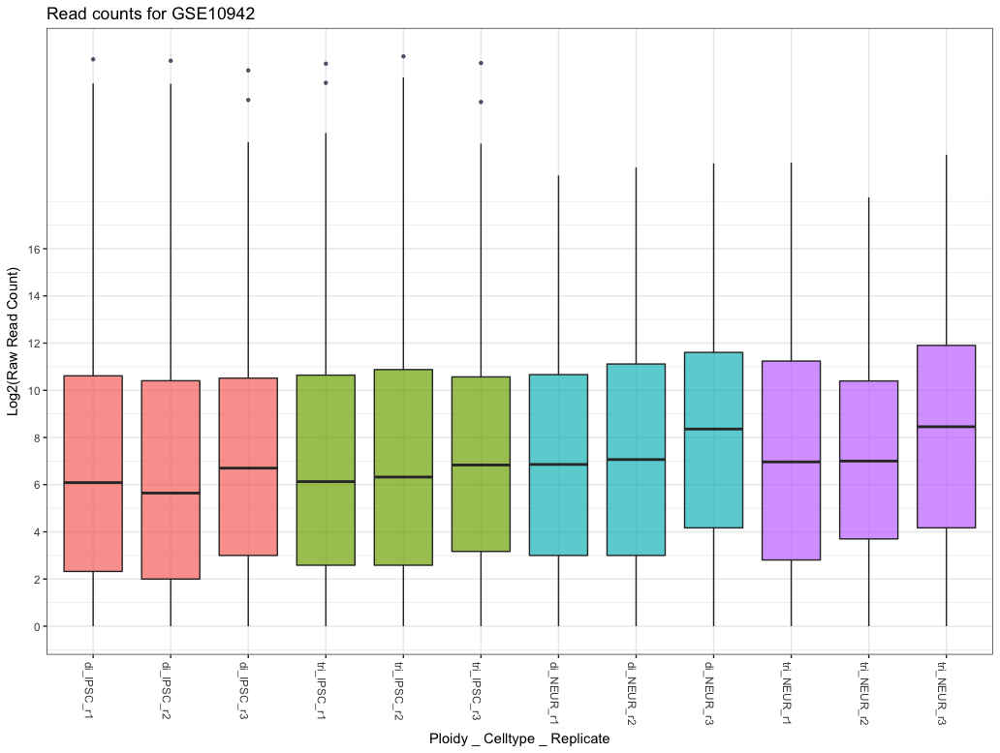
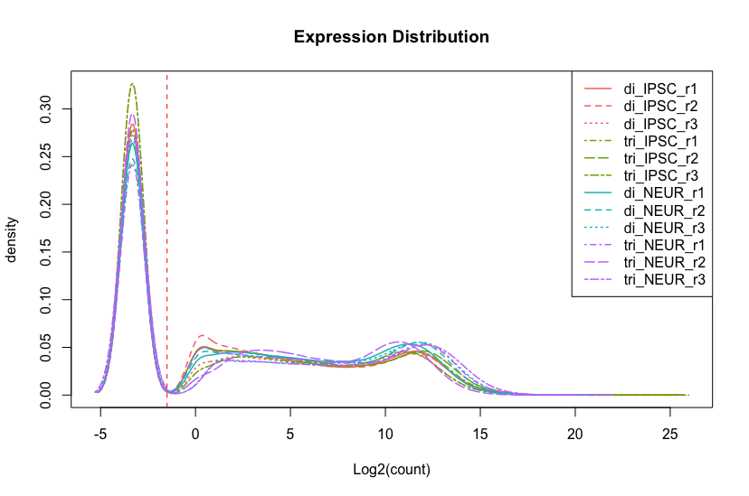
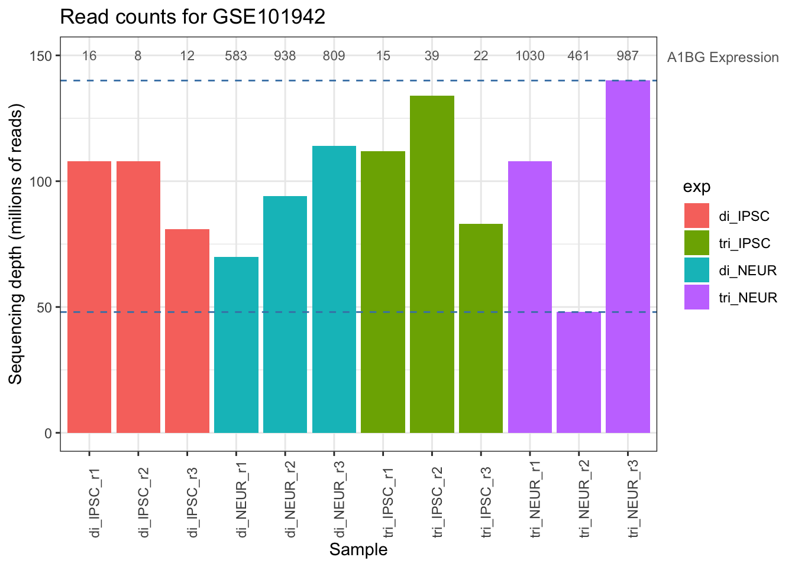
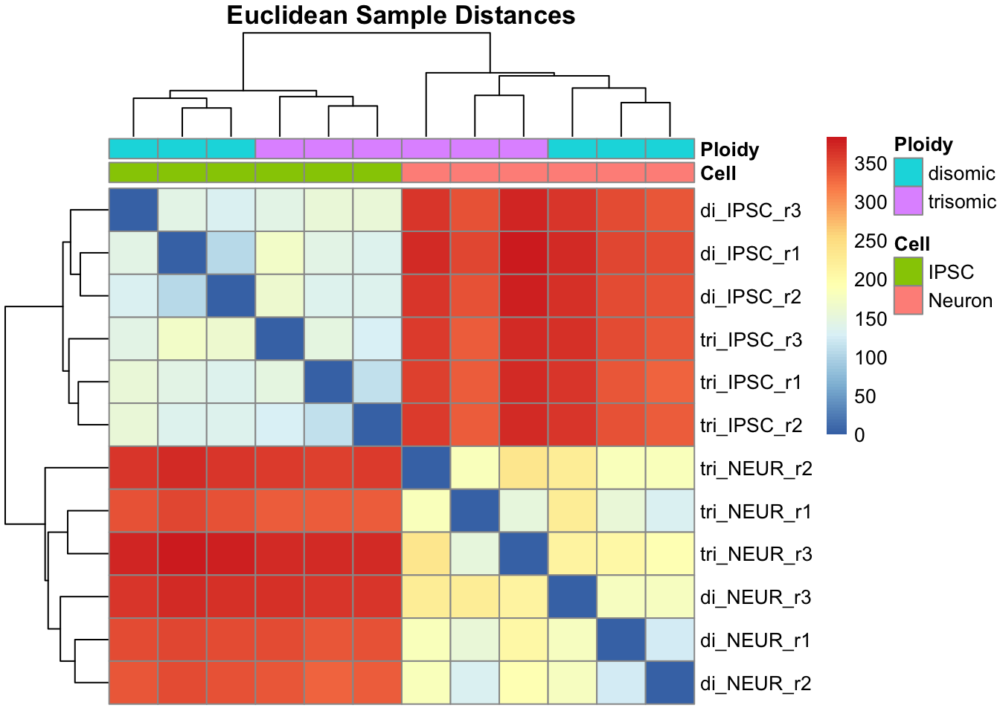
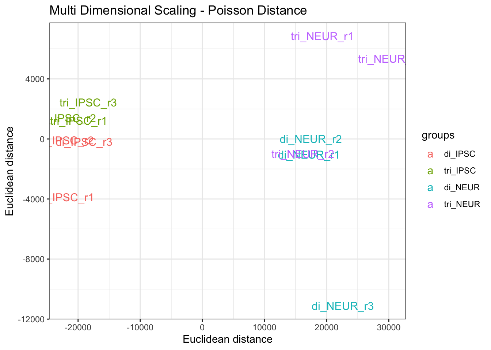

We start with performing some exploratory data analysis steps with the goal of getting to grips with your chosen data set to properly identify a strategy for the actual analysis steps. During this exploration we will also keep an eye on the quality of the data. Even though the downloadable data is ‘processed’, there might be samples present that deviate too much from the other group of samples (a so called outlier). Creating basic visualizations of the data will give the necessary insight before we continue.
Once you have one or more column based text files they can be read into R simply by using the read.table() function.
Follow the following steps to read in the data and start the exploratory data analysis. The resulting document should be treated as a lab journal where you log the process from loading the data to the final analysis steps.
#) called Exploratory Data Analysis.read.table function and carefully set its arguments. Open the file in a text editor first to check its contents; does it have a header? can we set the row.names? Are all columns needed? etc.pander function from the pander(Daróczi and Tsegelskyi 2017) R-library.dim() and the structure (with str()) of the loaded data set.str function to see if all columns are of the expected R data type (e.g. values, factors, character, etc.)case in which you store the column indices (only numbers!) of the respective columns in the data set and a variable called control with the remaining four data column indices. These are for later use.boxplot(counts[case]) immediately shows that we are plotting the case samples from the counts data which is more clear than reading boxplot(counts[c(5:8)]) as that gives no reference to what these indices mean and can lead to typing mistakes.
For some data sets the order in which the samples are listed in your
loaded data set is different from the order that is shown on the GEO
website. Most often, the names are different too or they are lacking any
description and all you have are non descriptive IDs. When creating
these variables such as control that need to point to all
control samples, you need to make sure that you have the right columns
from your data frame. Go to Appendix A2;
annotation if the order is unclear or you just have a large number
of samples as there might be supporting data available that can help
make sense of your sample layout.
If you want to include external images to your log and to better control properties such as height and width for individual images you can use the following code. Note: the code below is an example and you need to replace the img_to_include.png file path to an actual image.):
# Add the following to the code chunk header to control figure height, width and add a caption:
# {r, fig.height=5, fig.width=8, echo=FALSE, fig.cap="Image description"}
# The `dpi` argument is to remove any scaling
knitr::include_graphics("figures/img_to_include.png", dpi = NA)See the Knitr chunk options page for a full listing of all chunk options.
This section lists all (publically available) data set(s) used in this chapter. Each chapter contains this section if new data sets are used there. Note that for all examples, your data will be different from the examples and one of the challenges during this course will be translating the examples to your own data. Keep in mind that simple copy-pasting of most code will fail for that reason. Most examples therefore will print the input data for comparison to your own data.
From the section Normalization onwards, the experiment with identifier GSE101942 is used for visualizing the normalized raw count values (the earlier sections explore the unnormalized data). This experiment is titled “Transcriptome analysis of genetically matched human induced pluripotent stem cells disomic or trisomic for chromosome 21” and the experimental setup is described as follows:
“12 total polyA selected samples. 6 IPSC samples with 3 biological repeats for trisomic samples and 3 biological repeats for disomic samples. 6 IPSC derived neuronal samples with 3 biological repeats for trisomic samples and 3 biological repeats for disomic samples.”
The following code shows how to load the two available files containing the raw-count data (one file per 6 samples), stored locally in the data/gse101942/ folder. Some simple ‘cleanup’ steps are performed which aren’t required but helpful for demonstration purposes (i.e., renaming samples to identify groups).
GSE101942_IPSC_rawCounts.txt: raw count data for the induced pluripotent stem cells (iPSCs), both trisomic and disomicGSE101942_Neuron_rawCounts.txt: raw count data for the IPSC-derived Neurons, both trisomic and disomic. These cells were treated to remove chromosome 21 from the iPSCs, as described by the treatment protocol as: “Targeted removal of CHR 21 in IPSC using TKNEO transgene”.# Load the two sets of 6 samples
ipsc.data <- read.table('./data/gse101942/GSE101942_IPSC_rawCounts.txt',
header = TRUE)
neuron.data <- read.table('./data/gse101942/GSE101942_Neuron_rawCounts.txt',
header=TRUE)
# Merge by rowname (by = 0, see the help of 'merge')
counts <- merge(ipsc.data, neuron.data, by = 0, all.x = TRUE, all.y = TRUE,
sort = FALSE)
# Change all NA's introduced by the merge to zeros
counts[is.na(counts)] <- 0
# Show column names coming from the input files
print(names(counts))## [1] "Row.names" "c244A" "c244B" "c243" "c2A" "c2B"
## [7] "c2C" "C3_1" "C3_2" "C3_4" "C2_2_1" "C2_2_2"
## [13] "C2_2_3"# Set the row names to the gene IDs stored in the 'Row.names' column
row.names(counts) <- counts$Row.names
# Remove the gene ID column
counts <- counts[-1]
# Rename samples to include their group name
names(counts) <- c(paste0('di_IPSC_r', 1:3), # Disomic IPSC, replicates 1-3
paste0('tri_IPSC_r', 1:3), # Trisomic IPSC, replicates 1-3
paste0('di_NEUR_r', 1:3), # Disomic Neuron, replicates 1-3
paste0('tri_NEUR_r', 1:3)) # Trisomic Neuron, replicates 1-3
# Show results of renaming the samples
print(names(counts))## [1] "di_IPSC_r1" "di_IPSC_r2" "di_IPSC_r3" "tri_IPSC_r1" "tri_IPSC_r2"
## [6] "tri_IPSC_r3" "di_NEUR_r1" "di_NEUR_r2" "di_NEUR_r3" "tri_NEUR_r1"
## [11] "tri_NEUR_r2" "tri_NEUR_r3"# Assign column -indices- to variables for later use (i.e. counts[di_NEUR] selects the relevant columns)
di_IPSC <- 1:3
tri_IPSC <- 4:6
di_NEUR <- 7:9
tri_NEUR <- 10:12See Table 1 in the Normalization section for the resulting contents in the counts dataframe.
boxplot and density plotThis segment describes some of the basic steps and a visualization that can be performed during Exploratory Data Analysis. We start by inspecting the unnormalized count data. For the next steps normalization is applied as shown in the Normalization section below. As mentioned above, the focus of EDA is to get an overview/ perform a bit of Quality Control of the data set and while this often requires visualizing the data, these figures do not need to be very pretty. Simple figures are perfectly fine in this stage. Try to create these figures for your own data (and keep them in your log) and add a small description for each figure pointing out anything that is different from what you expect.
Also note that these steps are just a selection. Furthermore, make sure that for every visualization you make, add proper axis-labels containing the measurement units (important!). As you might be able to see, all values are log-transformed using the log2 function because very often the numerical values have a very high range which will ‘hide’ the details on the plots. See the section about the Fold Change value in chapter 4 for further details. It is fine to use non-log-transformed (simply the raw-)data, otherwise use for instance boxplot(log2(dataset)) for plotting.
Instead of using the basic R-plotting library
(i.e. plot, boxplot, hist, etc.)
you can also opt for using the (challenging) ggplot2
library that is also used for the boxplot in the following section.
While constructing a ggplot2 plot feels like learning yet
another language, there are many resources available online that you can
follow.
Even the most basic statistics can give some insight into the data such as performing a 6-number-statistic on the data columns using the summary() function. Note: you can also use the pander function to pretty-print a summary in the knitted output. What do you notice if you look at the numbers produced by executing this function on the complete data set?
A visual representation of these values can be shown using a boxplot. Boxplots are very easy to create from an R data frame object by just passing in the data columns. The following boxplot shows the data for an experiment with a separate boxplot for each sample. This allows a quick overview for spotting irregularities (i.e. checking if the replicates within a sample-group show similar expression profiles). Of course, if we consider the amount of data in this single plot, it can only hint at any problems, we need to look in much more detail when doing any form of quality control. Creating a boxplot from a dataframe is easy, but as we saw with using the summary function; the data has a large range with the maximum and average values being very far apart. This will create a lot of outliers in the plot which will be interesting later on, but for the boxplot we can either:
outline = FALSE argument to boxplot() (do say so in the figure description!), orlog2() transformation as you can see below.
When creating plots of expression data without performing
log-transformations we see that (for instance with the boxplot) the
range of data is very large (from 0 up to 1.000.000) with a lot
of outliers in the upper range. This makes for not very informative
figures, so placing a simple log2() function call around
the data almost resolves this issue.
However, this might introduce another problem (taking the boxplot as
an example) because this log-transformation results in data that
contains negative infinity (-Inf) values. These
are caused by all the 0-values in the data since
log2(0) == -Inf. To circumvent this issue, we can add a
pseudo count to the data by simply adding the value
1 to all count values since the log2(1) == 0;
log2(counts + 1).
There are more situations other than the boxplot where adding a
pseudo count value to the complete dataset can be useful. Always add a
pseudocount in-place, meaning within the plotting code instead
of overwriting your original data set with a pseudo count added as not
all steps require this. In some cases (see the density plot below) it can be useful to
clearly separate the 0-values from the rest in which case a
0 < pseudo count < 1 value, such as 0.1
can be used as this generates a negative value (-3.3) that
is far away from the rest of the data. All other count values are always
>0 which result in a positive log2 value.

Figure 3.1: Boxplot comparing basic statistics for all genes across multiple samples
Another form of visualizing the same data is using a density plot. This method shows a distribution of the (log2-transformed) count data for all samples and allows for easy spotting of problems. While this plot is more commonly used in analysing microarrays, it is still useful for comparing the complete dataset. The code and figure below show an example distribution for 12 samples. A few things to note about this figure is that there is a huge peak at exactly -3.321928 which can be ignored because this is value is calculated from log2(0.1) explained in the box above. This peak consists of all 0-values (inactive genes) which isn’t very important to us now. Therefore, we added a vertical line to indicate the left-part is of little interest. Note: a lot of the code below is extra, for a simple inspection using only the line plotDensity(log2(counts + 0.1)) is enough, the rest is extra example code.
To assess the quality of the data we look at the peaks in the plot. The heigth of the peak doesn’t matter much, shifted peaks do however as those indicate either a lower or higher amount of reads sequenced for that sample. This can be confirmed with the first plot demonstrated below in the next section where the library-sizes are visualized.
## The affy library has a density plotting function
library(affy)
## Create a list of 4 colors to use which are the same used throughout this chapter
library(scales)
myColors <- hue_pal()(4)
## Plot the log2-transformed data with a 0.1 pseudocount
plotDensity(log2(counts + 0.1), col=rep(myColors, each=3),
lty=c(1:ncol(counts)), xlab='Log2(count)',
main='Expression Distribution')
## Add a legend and vertical line
legend('topright', names(counts), lty=c(1:ncol(counts)),
col=rep(myColors, each=3))
abline(v=-1.5, lwd=1, col='red', lty=2)
Figure 3.2: Density plot comparing count distribution for 12 samples
heatmap and MDSThis section adds a few Exploratory Data Analysis techniques where we will measure and look at distances between samples based on normalized data. Measuring distances between two data objects (samples in our case) is a common task in cluster analysis to compare similarity (low distance indicates similar data). In this case we will calculate the distances between our samples and visualize them in a heatmap and using a multidimensional scaling (MDS) technique.
In the previous section we used the raw count data. You might have one or more samples that have different values (i.e. shifted) compared to other samples. While we need the raw count data to use R packages such as edgeR (Chen et al. 2018) and DESeq2 (Love, Anders, and Huber 2017), calculating sample distances (used in the visualizations in this section) should be done on some form of normalized data. This data can either be RPKM/FPKM/TPM/CPM or vst-transformed (raw-)read counts. A proper method of transforming raw read count data is using the vst method from the DESeq2 R Bioconductor library which is shown below. This ‘variance stabilizing transformation’ normalized data will only be used in this chapter, in chapter 4 we will again normalize using a different technique.
The following code examples shows how to use this library to normalize the count data from the GSE101942 experiment to vst-normalized data before we calculate a distance metric.
| di_IPSC_r1 | di_IPSC_r2 | di_IPSC_r3 | tri_IPSC_r1 | |
|---|---|---|---|---|
| 5S_rRNA | 4 | 6 | 4 | 17 |
| 7SK | 79 | 57 | 28 | 96 |
| A1BG | 16 | 8 | 12 | 15 |
| A1BG-AS1 | 267 | 253 | 166 | 316 |
| A1CF | 2 | 0 | 0 | 4 |
| A2M | 10 | 8 | 7 | 48 |
Table 1; Raw count data for GSE101942 (continued below)
| tri_IPSC_r2 | tri_IPSC_r3 | di_NEUR_r1 | di_NEUR_r2 | |
|---|---|---|---|---|
| 5S_rRNA | 13 | 12 | 22 | 16 |
| 7SK | 134 | 38 | 26 | 26 |
| A1BG | 39 | 22 | 583 | 938 |
| A1BG-AS1 | 339 | 211 | 680 | 659 |
| A1CF | 0 | 0 | 0 | 1 |
| A2M | 8 | 4 | 59 | 910 |
Table continues below
| di_NEUR_r3 | tri_NEUR_r1 | tri_NEUR_r2 | tri_NEUR_r3 | |
|---|---|---|---|---|
| 5S_rRNA | 0 | 26 | 9 | 0 |
| 7SK | 71 | 32 | 14 | 40 |
| A1BG | 809 | 1030 | 461 | 987 |
| A1BG-AS1 | 1165 | 636 | 449 | 1257 |
| A1CF | 2 | 0 | 0 | 0 |
| A2M | 520 | 592 | 155 | 74 |
If you look at Table 1 you immediately see a huge difference between the groups for each of the genes. The gene (A1BG) shows >100 more expression in the tri_NEUR group compared to the di_IPSC group, but within most groups there is a very high variation too indicating that it might not be the actual expression that is different. One very simple and quick method of inspection is looking at the total number of mapped reads per sample (the sum of each sample/ column), as the sequencing-depth might vary across samples.
Hint:
Simple version of this plot can be achieved with barplot(colSums(counts) / 1e6)
| di_IPSC_r1 | di_IPSC_r2 | di_IPSC_r3 | tri_IPSC_r1 | tri_IPSC_r2 | tri_IPSC_r3 |
|---|---|---|---|---|---|
| 108 | 108 | 81 | 112 | 134 | 83 |
Table 2; Mapped reads per sample (millions) (continued below)
| di_NEUR_r1 | di_NEUR_r2 | di_NEUR_r3 | tri_NEUR_r1 | tri_NEUR_r2 | tri_NEUR_r3 |
|---|---|---|---|---|---|
| 70 | 94 | 114 | 108 | 48 | 140 |

Figure 3.3: Library sizes for all samples from GSE101942
The numbers shown in Table 2 and the barplot above immediately clarify that it is not just the experimental condition that might have caused this large difference between sample counts but the sequencing depth shows a substantial difference too. Both the minimum and maximum sequencing depth are within the trisomic neuron group (purple in the barplot). The average expression of the A1BG gene within this group is 820, but with a minimum of 461 and a maximum of 1010 there is a lot of variation. This is one more reason telling us that we will have to normalize the data. The following code chunks show how to do this with DESeq2’s vst method (variance stabilizing transformation). Check the Packages tab in Rstudio to see if you have the DESeq2 package installed and load it with the library command.
To use the vst function from the DESeq2 library we must construct a DESeqDataSet-object consisting of the count data combined with sample annotation. Since we only want to use it (for now) for performing a vst-transformation we use the most basic form with a very simple design and the sample names as annotation (the colData argument):
# Load the library
library('DESeq2')
# DESeq2 will construct a SummarizedExperiment object and combine this
# into a 'DESeqDataSet' object. The 'design' argument usually indicates the
# experimental design using the condition(s) names as a 'factor', for now we use just '~ 1'
(ddsMat <- DESeqDataSetFromMatrix(countData = counts,
colData = data.frame(samples = names(counts)),
design = ~ 1))## class: DESeqDataSet
## dim: 56640 12
## metadata(1): version
## assays(1): counts
## rownames(56640): 5S_rRNA 7SK ... C1orf220 C2orf15
## rowData names(0):
## colnames(12): di_IPSC_r1 di_IPSC_r2 ... tri_NEUR_r2 tri_NEUR_r3
## colData names(1): samplesWe now have a proper DESeqDataSet object as you can see above, containing 56640 rows and 12 columns (genes and samples) with the gene symbols as row names. Usually this object would hold more data, but as this is only a requirement to perform the vst transformation it is good enough for now. Next step is performing this transformation (this can take a while depending on the size of the experiment and results in a Large DESeqTransform object) and retrieving the actual data from this with the assay function as this object too contains a lot of meta-data. The table below shows the updated values which are now comparable across genes whereas the raw count data was harder to compare.
| di_IPSC_r1 | di_IPSC_r2 | di_IPSC_r3 | |
|---|---|---|---|
| 5S_rRNA | 3.704 | 4.015 | 3.876 |
| 7SK | 6.726 | 6.36 | 5.747 |
| A1BG | 4.842 | 4.243 | 4.813 |
| A1BG-AS1 | 8.385 | 8.37 | 8.083 |
| A1CF | 3.322 | 2.343 | 2.343 |
| A2M | 4.397 | 4.243 | 4.312 |
Table 2; VST transformed disomic IPSC count data
Note that when again looking at the A1BG gene (the one displayed in figure 3.8), the normalized expression values show much less variation across the samples (not shown, but also within each sample group). Therefore, we assume that the large difference in expression we observed earlier might be non-existent (there might still be a significant difference though!).
We now have normalized data that we can use for distance calculation. This is a standard procedure for many data analysis tasks as it calculates a distance metric for each combination of samples that we will use to check for variation within the sample groups. We first need to transpose the matrix (rld) of normalized values using the t-function, because the dist function expects the different samples as rows and the genes as columns. Note that the output matrix is symmetric. Table 3 below shows the calculated distances within the disomic IPSC group where the distance between samples varies from 100 to 140. The maximum distance between any samples is 380 as will be demonstrated with the visualizations in the next sections.
# Calculate basic distance metric (using euclidean distance, see '?dist')
sampledists <- dist( t( rld ))| di_IPSC_r1 | di_IPSC_r2 | di_IPSC_r3 | |
|---|---|---|---|
| di_IPSC_r1 | 0 | 107.6 | 147.7 |
| di_IPSC_r2 | 107.6 | 0 | 139.7 |
| di_IPSC_r3 | 147.7 | 139.7 | 0 |
Table 3; Sample distances for the disomic IPSCs (Euclidean method)
If you have both (raw-)count data and an other normalized format (TPM, RPKM, etc.), you can optionally follow the above procedure for your count data and create a heatmap for both formats to see if this makes any difference. The reason for this is that while the RNA-Seq method exists for over 10 years, there are still ongoing discussions on the subject of data processing, especially regarding subjects like which normalization technque to use for which data analysis.
The following code block creates a heatmap using the pheatmap library which offers on of the many available heatmap functions. Using the annotation data frame (you can inspect the contents of it yourself) we identify the samples based on both the cell type and the ploidy. The clustering shown in the heatmap clearly separates the data based on the cell type and the differences between the ploidy seems to be minimal. Looking further still, the differences within a single group are minimal too meaning that we are not - yet - inclined to remove any outlier-samples. Since we have only have 3 samples per category, we would also lose statistical power if we eventually were to remove one or more samples (also, always check the article to see if they did remove any samples prior to the data analysis).
# We use the 'pheatmap' library (install with install.packages('pheatmap'))
library(pheatmap)
# Convert the 'dist' object into a matrix for creating a heatmap
sampleDistMatrix <- as.matrix(sampledists)
# The annotation is an extra layer that will be plotted above the heatmap columns
# indicating the cell type
annotation <- data.frame(Cell = factor(rep(1:2, each = 6),
labels = c("IPSC", "Neuron")),
Ploidy = factor(rep(rep(1:2, each = 3), 2),
labels = c("disomic", "trisomic")))
# Set the rownames of the annotation dataframe to the sample names (required)
rownames(annotation) <- names(counts)
pheatmap(sampleDistMatrix, show_colnames = FALSE,
annotation_col = annotation,
clustering_distance_rows = sampledists,
clustering_distance_cols = sampledists,
main = "Euclidean Sample Distances")
Figure 3.4: Heatmap showing the Euclidean distances between all samples
The resulting heatmap shows an interesting comparison across all samples where the order of samples is purely determined using the distance and is often different from the order in the data set. Ideally, we want the sample groups to be clustered together as we see with this data. This particular heatmap clearly shows a large difference in overal expression between the induced pluripotent stem cells (iPSCs) and their differentiated cortical neurons while the difference - within cell type - between disomic and trisomic is much lower.
The following code example shows how to perform Multi-Dimensional Scaling (MDS) that displays similarly calculated distances in a 2D-plot. With an experiment like this with two groups of samples, we hope to see two clearly separated clusters formed, however as we’ve seen in the heatmap, sample KO1B showed a large deviation which we will also see (confirm) using MDS.
The figure below is plotted using ggplot2, a more
advanced method of plotting in R. While these plots are preferred over
base-R plotting, it is always sufficient to use just that as it can be
very challenging to alter the example code shown in this section. The
data object plotted is shown and in this case contains simple X- and
Y-coordinates.
For MDS we use a slightly different distance metric (Poisson instead of the default euclidean used in the dist function). The following code shows how to calculate a more fitting distance for sequencing data called the Poisson Distance with a number of optimizations available in the PoiClaClu library. This library was specifically designed to handle read count data and is less influenced by read-count differences across samples. Note that again, the code below is only usable for count data as this function requires:
An n-by-p data matrix with observations on the rows, and p features on the columns. The (i,j) element of x is the number of reads in observation i that mapped to feature (e.g. gene or exon) j.
library('PoiClaClu')
# Note: uses the raw-count data, PoissonDistance performs normalization
# set by the 'type' parameter (uses DESeq)
dds <- assay(ddsMat)
poisd <- PoissonDistance( t(dds), type = "deseq")
# Extract the matrix with distances
samplePoisDistMatrix <- as.matrix(poisd$dd)
# Calculate the MDS and get the X- and Y-coordinates
mdsPoisData <- data.frame( cmdscale(samplePoisDistMatrix) )
# And set some better readable names for the columns
names(mdsPoisData) <- c('x_coord', 'y_coord')| x_coord | y_coord |
|---|---|
| -22016 | -3828 |
| -22069 | -8.734 |
| -19000 | -394.9 |
| -19955 | 1561 |
| -21758 | 1435 |
| -18369 | 2094 |
| 17182 | -988.6 |
| 17455 | -28.01 |
| 22613 | -11249 |
| 19312 | 6807 |
| 16493 | -792.7 |
| 30111 | 5392 |
Table 5: MDS coordinates used for plotting the distances using Poisson Distance
# Separate the annotation factor (as the variable name is used as label)
groups <- factor(rep(1:4, each=3),
labels = c("di_IPSC", "tri_IPSC", "di_NEUR", "tri_NEUR"))
coldata <- names(counts)
# Create the plot using ggplot
ggplot(mdsPoisData, aes(x_coord, y_coord, color = groups, label = coldata)) +
geom_text(size = 4) +
ggtitle('Multi Dimensional Scaling') +
labs(x = "Poisson Distance", y = "Poisson Distance") +
theme_bw()
Figure 3.5: Multi Dimensional Scaling - Poisson Distance for all samples
## Using base-R plot and legend functions:
# plot(mdsPoisData, col=rep(myColors, each=3), pch=20, lwd=2)
# legend(x=-20000, y=11000, legend = levels(groups), col=myColors, pch=20)We clearly see a separation on cell type and a less clear separation on ploidy. The spread within the disomic groups is much lower compared to the trisomic groups. Note that the y-axis range is about a 4th of the x-axis range. The sample di_NEUR_r3 shows a large difference in the MDS plot. Once we have a set of genes identified as being differentially expressed we could repeat this step with the expectation of a more clear clustering.
Conclude this chapter by cleaning your dataset if the visualizations show the necessity for this. Cleaning in this case means removing complete samples if they can be classified as an outlier within its group. As with most tasks during this course, there is no clear advice on when to decide to remove one or more samples. The only clear rule is that each group must retain at least three samples. If one of the three samples visibly deviates from the other replicates, even after normalization, it will stay in your data set and it should be mentioned in your analysis report/ final article that noise may be introduced by this sample. Note: Once you are satisfied with the data and reported on your findings, we do not return to any of these steps in the next chapters. If there are mentions of creating a heatmap for instance, this means a heatmap of expression data instead of the sample distances we’ve shown in this chapter.